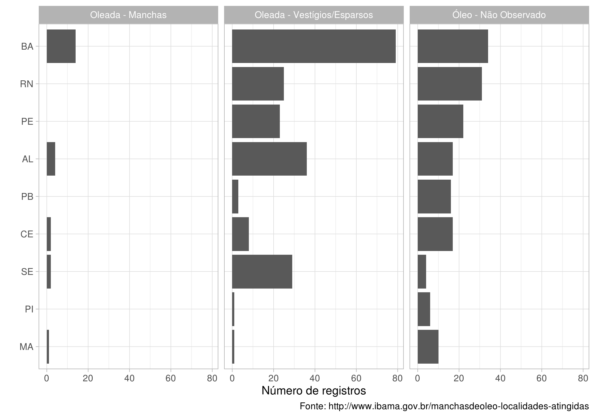

Os dados podem ser coletados aqui: http://www.ibama.gov.br/manchasdeoleo-localidades-atingidas
O código que produz este relatório pode ser encontrado aqui: https://github.com/kguidonimartins/scrape_derramamento_de_oleo_br
A única diferença dos dados usados aqui dos dados originais é a transformação das coordenadas geográficas de graus, minutos e segundos para graus decimais. O objetivo aqui é apresentar os dados de uma forma mais integrada.

Clique nos círculos para ter acesso às informações da localidade.